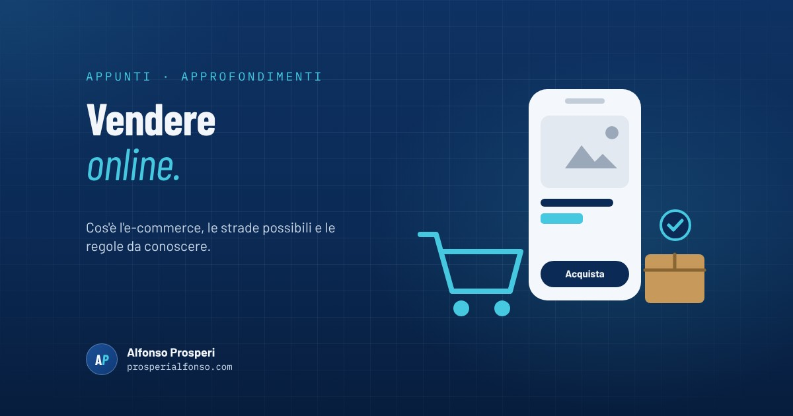

L'e-commerce, o commercio elettronico, è la vendita di prodotti e servizi attraverso Internet: un sito, un'app, un marketplace. Lo usiamo tutti come clienti, ma sempre più persone e piccole attività ci pensano anche come venditori. Vediamo come funziona e cosa serve sapere prima di partire.
I tipi di e-commerce
- B2C (business to consumer): un'impresa vende ai consumatori. È il caso più comune, il classico negozio online.
- B2B (business to business): un'impresa vende ad altre imprese, spesso con listini e condizioni riservate.
- C2C (consumer to consumer): privati che vendono ad altri privati, per esempio l'usato su app e siti di annunci.
Negozio tuo o marketplace?
- Marketplace (Amazon, eBay, Etsy e simili): porti i tuoi prodotti dove i clienti ci sono già. Parti in fretta, ma paghi commissioni su ogni vendita e segui le regole della piattaforma.
- Negozio online tuo: hai il controllo su prezzi, grafica e rapporto con i clienti, ma devi portare tu le persone sul sito. Le piattaforme più usate sono Shopify, WooCommerce (un'estensione di WordPress), Wix e Squarespace, oltre a soluzioni italiane.
Molti iniziano da un marketplace per capire se il prodotto funziona, e poi aprono anche un negozio proprio.
Le regole da conoscere in Italia
- Partita IVA. Chi vende in modo abituale e organizzato svolge un'attività d'impresa e deve aprirla. Vendere ogni tanto qualche oggetto personale usato è un'altra cosa.
- Le piattaforme comunicano i dati. Con la direttiva europea DAC7, i marketplace segnalano al Fisco chi supera certe soglie, per esempio 30 vendite o 2.000 euro in un anno.
- Diritti dei clienti. Chi compra online ha 14 giorni per il recesso e la garanzia legale di 2 anni: il venditore deve informarlo e rispettarli.
- Informazioni obbligatorie. Dati dell'impresa, prezzi chiari con le spese di spedizione, condizioni di vendita, informativa privacy.
- Sicurezza dei prodotti. Dalla fine del 2024 il regolamento europeo sulla sicurezza generale dei prodotti (GPSR) chiede anche a chi vende online di indicare chi è il responsabile del prodotto e le avvertenze necessarie.
Le regole cambiano a seconda di cosa vendi e di come lo fai: prima di partire conviene un confronto con un commercialista.
Le cose che fanno la differenza
- Foto e descrizioni curate: il cliente non può toccare il prodotto.
- Spedizioni e resi chiari, scritti bene prima dell'acquisto.
- Pagamenti sicuri e conosciuti, come carte e PayPal (ne parlo nel confronto Satispay e PayPal).
- Farsi trovare, con SEO, annunci e email ai clienti.
Un modello particolare di vendita online, senza magazzino, è il dropshipping: ne parlo in un articolo a parte.